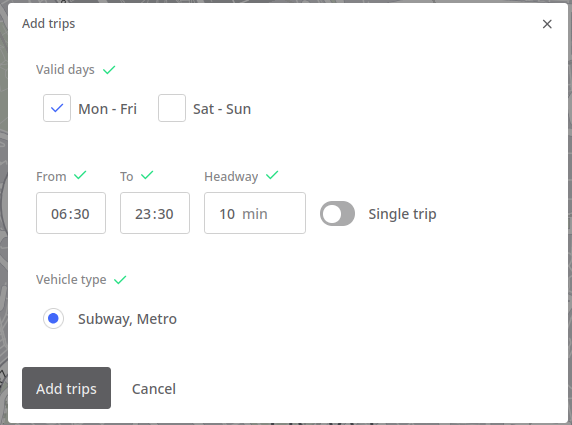
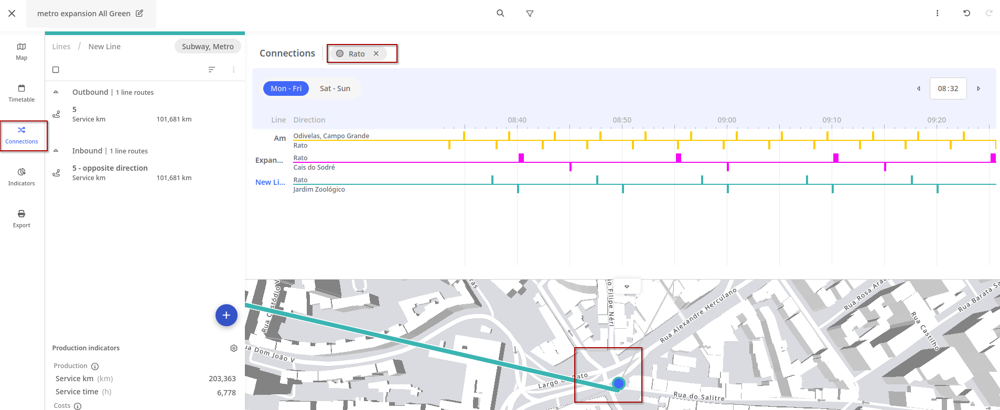

With the same method presented in Accessibility, let’s compare the population that can be reach from city center on a peak hour and a Sunday evening, using public transit and max 1 transfer.
Public transit - services available
First, we can have a look at the available routes on both time periods. We use tidytransit::filter_feed_by_date() function, to filter our GTFS by day and by hour.
For instance, for Carris (bus operator), on a Sunday there are 54% of the departures of a Wednesday, and on a Sunday evening (22h) there are 19% of the departures that are on a Wednesday morning (8h).
Transfers needed to reach all stops
By considering the PTransit stops as destinations (and not population), we can also estimate how many bus stops are reacheble, in total and by number of transfers needed, for each our.
These estimates are based on GTFS data only, and do not rely on r5r.
summary(gtfs_carris)
tidygtfs object
files agency, stops, routes, trips, stop_times, calendar, calendar_dates, shapes, transfers
agency Carris
service from 2025-09-01 to 2025-12-01
uses stop_times (no frequencies)
# routes 175
# trips 53028
# stop_ids 2341
# stop_names 1139
# shapes 307
# We will use the Cais Sodré bus stop namefrom_station ="Cais Sodré"stop_times_carris =filter_stop_times(gtfs_carris, "2025-10-01", "08:00:00", "09:00:00")trip_duration_cais =travel_times(stop_times_carris, from_station, stop_dist_check =FALSE)nrow(trip_duration_cais) # 989summary(trip_duration_cais$travel_time/60) # in minutos
Min. 1st Qu. Median Mean 3rd Qu. Max.
0.00 19.85 29.87 29.72 40.02 62.30
Not counting the waiting time at Cais do Sodré it is possible to reach 989 stops in the network (42%) during rush hour—within the 1 hour time frame defined.
Only 22% of stops are directly accessible (without bus transfers). 78% are accessible with a maximum of 1 transfer, and 2.1% of stops require at least 4 buses to reach (3 transfers).
Let’s create a new metro line or a new station in your city.
New pink line (expansion in Lisbon)
Methodology
For that, an easy graphic interface software is the PTV Lines.
Login into PTV Lines (upper right corner) with the credentials that were sent to you.
Create a new scenario, and import an existing subway gtfs (.zip) - max 50 lines!
Edit that scenario by creating stops and lines.
Export the GTFS file.
Duplicate your r5r folder (baseline scenario) and delete the network.dat file inside. Rename it as ..._ver1 and replace the gtfs.zip by the one you just exported.
Build a new network with that folder path.
Create a metro line with PTV Lines
First, create new station points (S) and name them. As many as you need.
Then, create a new line (L), name it something like “Expansion”, and create a new route (R). Name it 0 (you can edit later) and draw that line roughly by selecting an existing start station and connecting to your new stations.
Add trips to it (T), with a proper headway.

After defining the weekday and weekend trips, go to the Outbound route and “Create opposite direction”, so you can have both directions now. Rename the line routes, something as “Start station - End station”.
Extend a metro line with PTV Lines
This tutorial assumes that the stations for which the line will be extended to already exist (if not, see how to create new stations at Create a metro line with PTV Lines).
The extension is performed over a route. To access one, click on a transit line, and then on one of its routes.
On the map, hover the Start/End buttons and click it to enable the extension mode.
Once the extension mode is activated, your cursor will turn into a pen icon and you just have to click on the station you want to expand your line to.
Routing modes
Be aware of the several modes available on the button that is now displayed (automatic routing mode, street routing mode, straight line mode or exclusive PT routing mode). Make sure you use the one that best suits your use case.
Once you click on the station, you should see the new station in the route window, on the left part of the screen. You should adjust the run and dwell times accordingly.
Visualizing time diagram
Go to Connections, and click on a connecting station to visualize the time diagram of connections with other routes.

Generate GTFS
After all your edits, go back to the dashboard, and click on “Export supply”. Export as GTFS (.zip)
Your scenario will be saved in your dashboard. You can edit or duplicate them later.
Your task
Run some routing and accessibility analysis, and compare with the baseline scenario.
Consider comparing the estimated cost of your new infrastructure and the mobility gains.
See Pereira and Herszenhut (2023)Chapter 6 for an example.
If you do multi-modal analysis, you may need to use GTFShift::unify() to merge the new gtfs with other modes and create new transfers.
References
INE. 2022. “Censos 2021- XVI Recenseamento Geral da População. VI Recenseamento Geral da Habitação.” Lisboa: Instituto National de Estatística. https://censos.ine.pt/xurl/pub/65586079.
Pereira, Rafael HM, and Daniel Herszenhut. 2023. Introduction to Urban Accessibility: A Practical Guide with r. Instituto de Pesquisa Econômica Aplicada (Ipea). https://ipeagit.github.io/intro_access_book/.